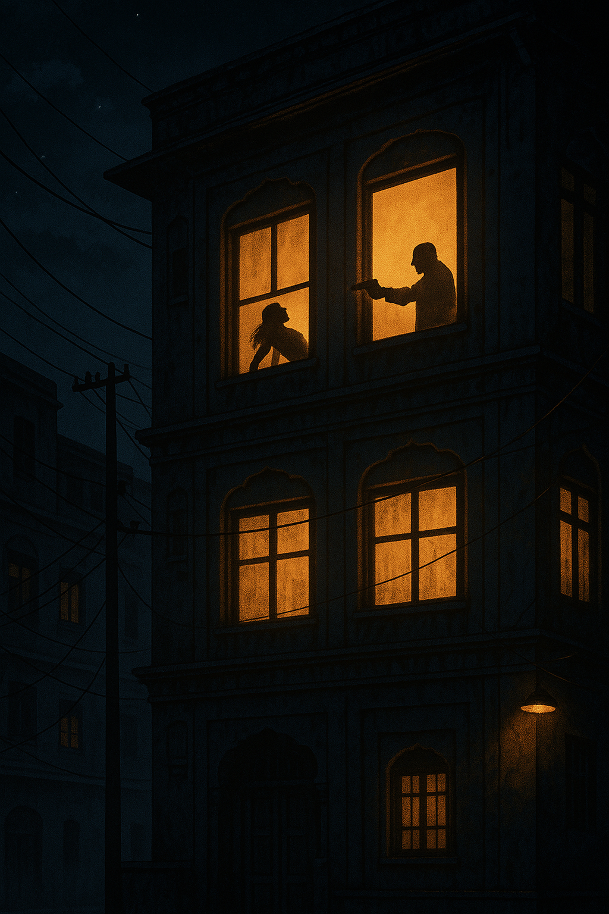

10 PM..
Bangalore's summer night curled around an ageing apartment block, the sort that forever smelt of curry leaves, damp cement, and somebody's ironing. From the service lane below, all Avinash could see was the lit third‐floor window—two silhouettes locked in a quarrel so fierce their gestures slashed the curtains. Voices rose, shrill and overlapping.
Then a third shadow entered the frame.
A single thunder‐crack of a gunshot shattered the quarrel, followed by a gasp, a scream, and sudden darkness.